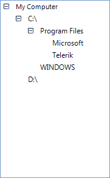
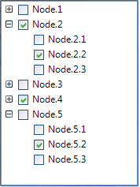

Binding to Self Referencing Data
Binding RadTreeView to self referencing data differs form
binding to related data in that RadTreeView is bound to a single list instead of multiple related lists.
In order to set the parent-child relation between the records of the data source,
we should set the ParentMember and ChildMember properties to the respective fields this data source.
If the parent ID for a record does not have a respective value in the child ID field of the records,
then that record is considered to have no parents.
Minimal example
The following example demonstrates how to bind RadTreeView to a self referencing DataTable.
[C#]
public BindingToSelfRefData()
{
InitializeComponent();
this.radTreeView1.DisplayMember = "name";
this.radTreeView1.ParentMember = "pid";
this.radTreeView1.ChildMember = "id";
this.radTreeView1.DataSource = this.GetSampleData();
}
private DataTable GetSampleData()
{
DataTable dt = new DataTable();
DataColumn dc = new DataColumn();
dc.ColumnName = "id";
dc.DataType = typeof(int);
dt.Columns.Add(dc);
DataColumn dc1 = new DataColumn();
dc1.ColumnName = "name";
dc1.DataType = typeof(string);
dt.Columns.Add(dc1);
DataColumn dc2 = new DataColumn();
dc2.ColumnName = "pid";
dc2.DataType = typeof(int);
dt.Columns.Add(dc2);
DataRow dr = dt.NewRow();
dr[0] = 0;
dr[1] = "My Computer";
dr[2] = DBNull.Value;
dt.Rows.Add(dr);
dr = dt.NewRow();
dr[0] = 1;
dr[1] = @"C:\";
dr[2] = 0;
dt.Rows.Add(dr);
dr = dt.NewRow();
dr[0] = 2;
dr[1] = @"D:\";
dr[2] = 0;
dt.Rows.Add(dr);
dr = dt.NewRow();
dr[0] = 3;
dr[1] = "Program Files";
dr[2] = 1;
dt.Rows.Add(dr);
dr = dt.NewRow();
dr[0] = 4;
dr[1] = "Microsoft";
dr[2] = 3;
dt.Rows.Add(dr);
dr = dt.NewRow();
dr[0] = 5;
dr[1] = "Telerik";
dr[2] = 3;
dt.Rows.Add(dr);
dr = dt.NewRow();
dr[0] = 6;
dr[1] = "WINDOWS";
dr[2] = 1;
dt.Rows.Add(dr);
return dt;
}
[VB.NET]
Public Sub New()
InitializeComponent()
Me.RadTreeView1.DisplayMember = "name"
Me.RadTreeView1.ParentMember = "pid"
Me.RadTreeView1.ChildMember = "id"
Me.RadTreeView1.DataSource = Me.GetSampleData()
End Sub
Private Function GetSampleData() As DataTable
Dim dt As New DataTable()
Dim dc As New DataColumn()
dc.ColumnName = "id"
dc.DataType = GetType(Integer)
dt.Columns.Add(dc)
Dim dc1 As New DataColumn()
dc1.ColumnName = "name"
dc1.DataType = GetType(String)
dt.Columns.Add(dc1)
Dim dc2 As New DataColumn()
dc2.ColumnName = "pid"
dc2.DataType = GetType(Integer)
dt.Columns.Add(dc2)
Dim dr As DataRow = dt.NewRow()
dr(0) = 0
dr(1) = "My Computer"
dr(2) = DBNull.Value
dt.Rows.Add(dr)
dr = dt.NewRow()
dr(0) = 1
dr(1) = "C:\"
dr(2) = 0
dt.Rows.Add(dr)
dr = dt.NewRow()
dr(0) = 2
dr(1) = "D:\"
dr(2) = 0
dt.Rows.Add(dr)
dr = dt.NewRow()
dr(0) = 3
dr(1) = "Program Files"
dr(2) = 1
dt.Rows.Add(dr)
dr = dt.NewRow()
dr(0) = 4
dr(1) = "Microsoft"
dr(2) = 3
dt.Rows.Add(dr)
dr = dt.NewRow()
dr(0) = 5
dr(1) = "Telerik"
dr(2) = 3
dt.Rows.Add(dr)
dr = dt.NewRow()
dr(0) = 6
dr(1) = "WINDOWS"
dr(2) = 1
dt.Rows.Add(dr)
Return dt
End Function
As a result we get the hierarchy of nodes shown below:
Binding check boxes
Since Q3 2014 RadTreeView supports binding the check-boxes of the nodes to a field in the data. You just need to specify
the RadTreeView.CheckedMember property. The following code snippet demonstrates how to setup a self referencing hierarchy in the
tree and bind the check boxes:

[C#]
DataTable dt = new DataTable();
dt.Columns.Add("Id", typeof(string));
dt.Columns.Add("ParentId", typeof(string));
dt.Columns.Add("Name", typeof(string));
dt.Columns.Add("IsActive", typeof(bool));
string parentId = string.Empty;
string childId = string.Empty;
for (int i = 1; i <= 5; i++)
{
parentId = Guid.NewGuid().ToString();
dt.Rows.Add(parentId, null, "Node." + i, i % 2 == 0);
for (int j = 1; j <= 3; j++)
{
childId = Guid.NewGuid().ToString();
dt.Rows.Add(childId, parentId, "Node." + i + "." + j, j % 2 == 0);
}
}
radTreeView1.DisplayMember = "Name";
radTreeView1.ParentMember = "ParentId";
radTreeView1.ChildMember = "Id";
radTreeView1.CheckedMember = "IsActive";
radTreeView1.CheckBoxes = true;
radTreeView1.DataSource = dt;
[VB.NET]
Dim dt As New DataTable()
dt.Columns.Add("Id", GetType(String))
dt.Columns.Add("ParentId", GetType(String))
dt.Columns.Add("Name", GetType(String))
dt.Columns.Add("IsActive", GetType(Boolean))
Dim parentId As String = String.Empty
Dim childId As String = String.Empty
For i As Integer = 1 To 5
parentId = Guid.NewGuid().ToString()
dt.Rows.Add(parentId, Nothing, "Node." & i, i Mod 2 = 0)
For j As Integer = 1 To 3
childId = Guid.NewGuid().ToString()
dt.Rows.Add(childId, parentId, "Node." & i & "." & j, j Mod 2 = 0)
Next
Next
radTreeView1.DisplayMember = "Name"
radTreeView1.ParentMember = "ParentId"
radTreeView1.ChildMember = "Id"
radTreeView1.CheckedMember = "IsActive"
radTreeView1.CheckBoxes = True
radTreeView1.DataSource = dt
'#End Region
End Sub
End Class